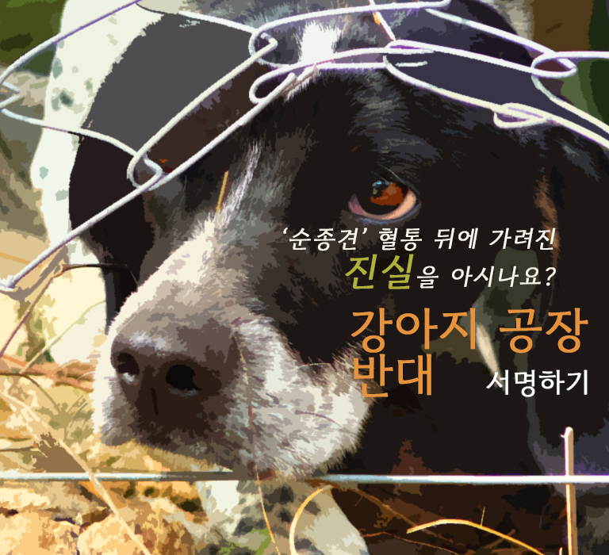
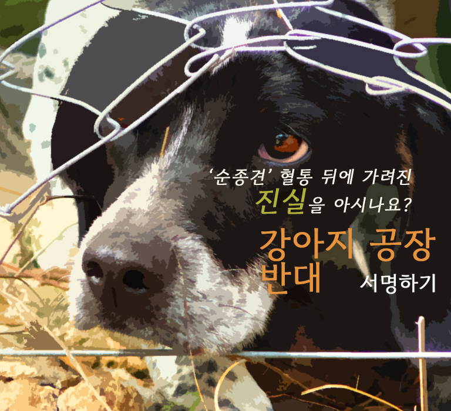

잔인하게 개 도살, 허가 없이 번식·경매…동물 불법행위 적발
더보기 #반려동물#동물법률
[수원=뉴시스] 박상욱 기자 = 잔인한 방법으로 개를 도살하는 등 동물 관련
불법행위를 한 업자 등이 경기도 특별사법경찰단에 적발됐다.
경기도 민생특별사법경찰단은 지난 2월부터 12월까지 도내 개 사육시설과 반려동물
관련 영업을 하는 시설 243곳을 대상으로 단속을 벌여 동물보호법 등을 위반한
11곳(11건)을 적발했다고 26일 밝혔다.
위반 내용은 ▲동물 학대행위 2건 ▲무허가 동물생산업 3건 ▲미등록
동물위탁관리업 1건 ▲미신고 음식물류 폐기물 처리 4건 ▲미신고 가축분뇨
배출시설 설치 1건이다...